This is a "Clock" that tries to mimick the style of a battery of some device. The battery will slowly go down as you are on the page, but you can also click on the drawing and interact with it, the battery will drain faster.
I started with the basic square in the middle and eventually found out that there is a rectangle mode that needs one to define the opposite corners to make the rectangle. Using this I was easily able to "drain" the battery life by using variables and once it reaches a certain point it would turn red. I also utilized the map function in order to show what percentage the battery is actually at.
I found that working with milliseconds, seconds, minutes, and hours was counterintuivitve on what I was trying to do. Instead I found that using a variable and increasing it each time the draw function was running. This made it so I didn't have to worry about the slight inconcstency that the seconds, minutes, and hours have and seemed much easier than trying to map milliseconds.